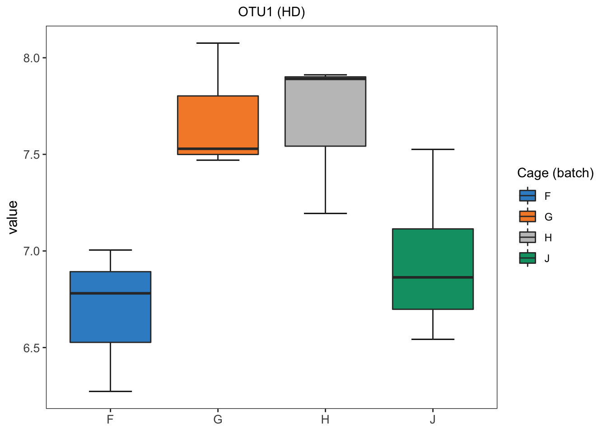

Chapter 3 Batch effect correction
3.1 BMC (batch mean centering)
# Sponge data
sponge.b1 = scale(sponge.tss.clr[gel.batch== 1,],center = TRUE, scale = FALSE)
sponge.b2 = scale(sponge.tss.clr[gel.batch== 2,],center = TRUE, scale = FALSE)
sponge.bmc = rbind(sponge.b1,sponge.b2)
sponge.bmc = sponge.bmc[rownames(sponge.tss.clr),]
##############
# AD data
ad.b1 = scale(ad.tss.clr[time.batch=="01/07/2016",],center = TRUE, scale = FALSE)
ad.b2 = scale(ad.tss.clr[time.batch=="09/04/2015",],center = TRUE, scale = FALSE)
ad.b3 = scale(ad.tss.clr[time.batch=="14/04/2016",],center = TRUE, scale = FALSE)
ad.b4 = scale(ad.tss.clr[time.batch=="14/11/2016",],center = TRUE, scale = FALSE)
ad.b5 = scale(ad.tss.clr[time.batch=="21/09/2017",],center = TRUE, scale = FALSE)
ad.bmc = rbind(ad.b1,ad.b2,ad.b3,ad.b4,ad.b5)
ad.bmc = ad.bmc[rownames(ad.tss.clr),]3.2 ComBat
# Sponge data
mod.sponge = model.matrix(~Tissue.trt)
sponge.combat <- t(ComBat(t(sponge.tss.clr),batch=gel.batch,mod = mod.sponge,par.prior=F,prior.plots = F))## Found2batches## Adjusting for1covariate(s) or covariate level(s)## Standardizing Data across genes## Fitting L/S model and finding priors## Finding nonparametric adjustments## Adjusting the Data##############
# AD data
mod.ad = model.matrix(~concentration.trt)
ad.combat <- t(ComBat(t(ad.tss.clr),batch=time.batch,mod = mod.ad, par.prior=F,prior.plots = F))## Found5batches## Adjusting for1covariate(s) or covariate level(s)## Standardizing Data across genes## Fitting L/S model and finding priors## Finding nonparametric adjustments## Adjusting the Data3.3 removeBatchEffect
# Sponge data
design.sponge = model.matrix(~Tissue.trt)
sponge.limma <- t(removeBatchEffect(t(sponge.tss.clr),batch = gel.batch,design = design.sponge))
#############
design.ad = model.matrix(~concentration.trt)
ad.limma <- t(removeBatchEffect(t(ad.tss.clr),batch = time.batch,design = design.ad))3.4 percentile normalisation
sponge.percentile = percentile_norm(data = sponge.tss, batch = gel.batch, trt = Tissue.trt)
# ad data
ad.percentile = percentile_norm(data = ad.tss, batch = time.batch, trt = concentration.trt)3.5 SVD-based method
#################
# sponge data
sponge.sd = apply(sponge.tss.clr,2,sd)
sponge.mean = apply(sponge.tss.clr,2,mean)
X.sponge = scale(sponge.tss.clr,center = T,scale = T)
m.sponge = crossprod(X.sponge)
m.svd.sponge = svd(m.sponge)
barplot(m.svd.sponge$d)
a1.sponge = m.svd.sponge$u[,1]
b1.sponge = m.svd.sponge$v[,1]
# component 1
t1.sponge = X.sponge %*% a1.sponge / drop(sqrt(crossprod(a1.sponge)))
c1.sponge = crossprod(X.sponge, t1.sponge) / drop(crossprod(t1.sponge))
defl.matrix_svd1.sponge = X.sponge - t1.sponge %*% t(c1.sponge)
# #
sponge.svd = defl.matrix_svd1.sponge
sponge.svd[1:nrow(sponge.svd),1:ncol(sponge.svd)] = NA
for(i in 1:ncol(defl.matrix_svd1.sponge)){
for(j in 1:nrow(defl.matrix_svd1.sponge)){
sponge.svd[j,i] = defl.matrix_svd1.sponge[j,i]*sponge.sd[i] + sponge.mean[i]
}
}
#####################
# ad data
ad.sd = apply(ad.tss.clr,2,sd)
ad.mean = apply(ad.tss.clr,2,mean)
X.ad = scale(ad.tss.clr,center = T,scale = T)
m.ad = crossprod(X.ad)
m.svd.ad = svd(m.ad)
barplot(m.svd.ad$d)
a1.ad = m.svd.ad$u[,1]
b1.ad = m.svd.ad$v[,1]
# component 1
t1.ad = X.ad %*% a1.ad / drop(sqrt(crossprod(a1.ad)))
c1.ad = crossprod(X.ad, t1.ad) / drop(crossprod(t1.ad))
defl.matrix_svd1.ad = X.ad - t1.ad %*% t(c1.ad)
# #
ad.svd = defl.matrix_svd1.ad
ad.svd[1:nrow(ad.svd),1:ncol(ad.svd)] = NA
for(i in 1:ncol(defl.matrix_svd1.ad)){
for(j in 1:nrow(defl.matrix_svd1.ad)){
ad.svd[j,i] = defl.matrix_svd1.ad[j,i]*ad.sd[i] + ad.mean[i]
}
}3.6 RUVIII
RUVIII needs technical sample replicates and negative control variables. As only AD data have sample replicates, RUVIII is only applied on AD data. We use linear model to find variables with less probability of treatment effects, and these variables are treated as negative control variables to fit the assumptions of RUVIII.
#####################
# ad data only
replicates.ad = metadata.ad$sample_name.data.extraction
replicates.ad.matrix = replicate.matrix(replicates.ad)
p.ad = matrix(NA,nrow = 2, ncol = ncol(ad.tss.clr))
rownames(p.ad) = c('concentration.trt','time.batch')
colnames(p.ad) = colnames(ad.tss.clr)
for(i in 1:ncol(ad.tss.clr)){
res = lm(ad.tss.clr[,i] ~ concentration.trt + time.batch)
summ.res = summary(res)
anova.res = anova(res)
p.ad[1,i] = anova.res$`Pr(>F)`[1]
p.ad[2,i] = anova.res$`Pr(>F)`[2]
}
p.adj.ad = apply(p.ad,1,p.adjust,method = 'fdr')
p.adj.ad1 = sort(p.adj.ad[,1],decreasing = T)
nc.otu1 = names(p.adj.ad1[1:75]) #negative control genes need be equal or more than samples
nc1 = rep(FALSE, ncol(ad.tss.clr))
names(nc1) = colnames(ad.tss.clr)
nc1[nc.otu1] = TRUE
ad.ruv <- RUVIII(Y=ad.tss.clr,M = replicates.ad.matrix, ctl = nc1)
rownames(ad.ruv) = rownames(ad.tss.clr)